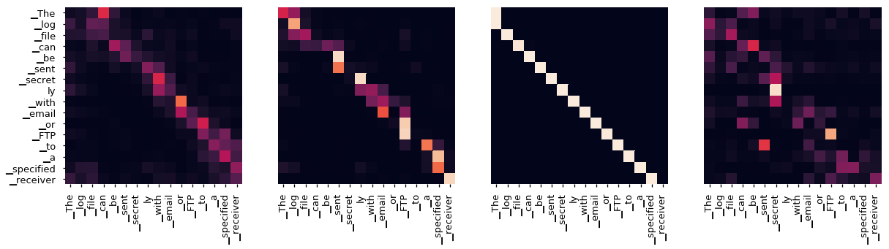
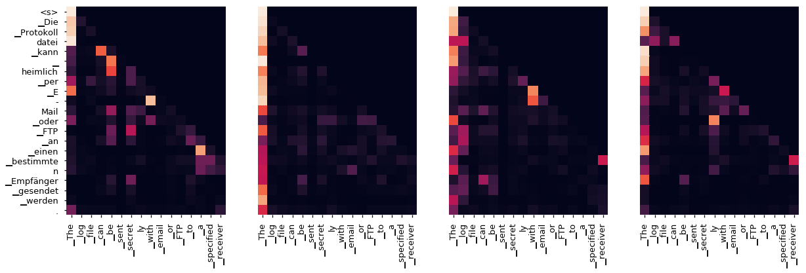

加餐 B01 · The Annotated Transformer 中文导读
论文名片
The Annotated Transformer（逐行注解的 Transformer）——Harvard NLP 的 Sasha Rush 等人发布的"论文即代码"教程：把《Attention Is All You Need》逐段重写成可运行的 PyTorch 实现，论文每句话旁边就是对应代码。2018 年首次发布，2022 年以 Jupyter Book 形式重制，是 Ilya 推荐书单 i17 条目的原作。
原文入口：新版（Jupyter Book）；经典单页版：2018/04/03/attention.html；代码仓库：harvardnlp/annotated-transformer（代码 MIT 许可）。
本页性质声明：原文正文版权归 Harvard NLP / Sasha Rush 所有，未开放逐字转载许可，因此本页不是逐字翻译，而是覆盖原文全部章节的中文导读：每节讲清"这节在干什么、为什么这么设计"，关键实现配中文思路说明（代码遵循 MIT 许可引用），原文配图选取核心几张并注明来源。通读本页 + 按链接对照原文，即可用中文完整读懂它。
Ilya 为什么选它
书单里 i16 是 Transformer 原论文，i17 就是这份 Annotated Transformer。原因很直白：读论文只能"看懂结构"，读它能把结构"跑起来"。它开创的"论文旁就是代码"的写法，后来被无数教程模仿，但公认它仍是把 Transformer 实现讲得最干净的一份材料。
对读者的实际收益：把概念（i16 讲过的注意力、多头、位置编码）逐个落到几行代码上；本站另有系统视角的 F01 深度解读可以对照阅读。
全文地图：35 个小节怎么读
原文共 35 个标题小节，分六大块：① 准备与背景（Prelims、Background）——环境与动机；② 模型架构（Model Architecture 及 9 个小节）——编码器、解码器、注意力、前馈、嵌入、位置编码、完整模型；③ 训练（Training 及 7 个小节）——批处理与掩码、训练循环、真实数据、硬件、优化器、正则化；④ 第一个例子（4 个小节）——复制任务、损失、贪心解码；⑤ 真实世界示例（5 个小节）——WMT14 数据与多卡训练；⑥ 结果与可视化——评测数字与注意力热图，最后是结论。
建议读法：第一遍只读 ② 里的主线（注意力 → 位置编码 → 完整模型），配合本页；第二遍再补训练与工程细节。
逐节导读 · 模型架构部分
Encoder and Decoder Stacks（编码器-解码器堆叠）：两座塔各堆 6 层。编码器负责"把源句读透"，解码器负责"一边看编码结果一边逐词写译文"。每层都是"注意力 + 前馈 + 残差与归一化"的三件套。
Attention（注意力）小节：把"查资料"拆成三个角色——查询（Q，我要找什么）、键（K，我这里有什么标签）、值（V，实际的内容）。打分 = 查询和每个键对一下相似度，再按分数把值加权取回来。缩放点积的除法是关键细节：词向量越长，打分差异越容易失控，所以除以一个和词长相关的数（约 √d），把分数压回温和区间——好比考试分数要按科目满分归一化才有可比性。
Applications of Attention（三处应用）：编码器自注意力（每个词看全句）、解码器自注意力（只准看已经写出的部分，掩码挡住未来）、交叉注意力（译文回头看原文）——同一套积木，三种用法。
Position-wise Feed-Forward Networks（逐位置前馈）：注意力管"词与词交流"，前馈管"每个词自己消化"：两层全连接，先扩张到约 4 倍维度再压缩回来，相当于每个词独立过一个小型加工车间。
Embeddings and Softmax（嵌入与输出）：词先变成向量；一个容易被忽略的细节是嵌入向量要乘上词长的平方根，把量级拉齐。解码器输出端与嵌入共享权重，减少参数。
Positional Encoding（位置编码）：注意力本身"分不清先后"，所以要给每个位置发一组不同频率的正弦/余弦标签——像钟表的时针、分针、秒针，不同频率组合出独一无二的时刻，模型靠它知道词序。
Full Model（完整模型）：把上述零件组装成可训练的 make_model，并附带贪心解码函数——到这里，i16 论文的全部结构都有了对应实现。
逐节导读 · 训练部分
Batches and Masking（批与掩码）：训练以"翻译对"为单位成批喂入；掩码负责把"未来的词"挡住，防止解码器作弊偷看答案——高考不能翻下一页。
Training Loop（训练循环）：算损失、清梯度、反向传播、优化器走一步，外加日志——工程上朴素，但每一步都可复现。
Training Data and Batching（数据与分桶）：用 WMT14 翻译数据；句子长短不一，按长度分桶再组批，减少填充浪费。
Hardware and Schedule（硬件与日程）：原文记录了所用的显卡数量与训练时长配置，具体数字以原文为准——想复现就照这一节准备机器。
Optimizer（优化器）：Adam 配 Noam 式学习率：前期小步"热身"爬坡，过峰后按步数的平方根规律逐渐衰减——先热身再减速，训练才稳。
Regularization（正则化）：两个手段：Dropout 在多个位置随机"闭眼"防死记；标签平滑（Label Smoothing）把标准答案从"1 和 0"抹成"接近 1 和接近 0"——不让模型把全部信心押在一个选项上，泛化更好，代价是损失值看起来偏高。
逐节导读 · 两个实战例子
A First Example（第一个例子）：用"复制任务"练手——让模型学会把输入原样抄成输出。任务小到几分钟就能跑通，却把"数据、损失、贪心解码"整条链路全走了一遍；损失计算部分顺带解释了标签平滑下的损失形态。
A Real World Example（真实世界示例）：换上 WMT14 真实翻译数据：数据加载、按词表编号、迭代器封装、多 GPU 训练（ torch.distributed 风格的封装），最后把模型训练到可评测状态。读完这段，你就拥有了一个"从数据到模型"的完整最小工程。
结果与注意力可视化
原文后半展示了训练出的模型的翻译评测结果，以及最著名的一部分：注意力权重的热图可视化。下面两张图取自原文生成结果（图源：The Annotated Transformer，Harvard NLP；模型出自 Vaswani et al. 2017）。

训练早期：注意力分布还很平，模型在"乱看"，词与词之间没有形成稳定的关注模式。

训练较充分后：出现清晰的词对齐（某个词强烈关注它在另一侧的对应词），不同注意力头开始分工——有的盯相邻词，有的盯长距离结构。这两张图连起来看，就是"模型学会翻译"的直观证据。
术语小词典
Q / K / V：查询、键、值，注意力里的"找什么、凭什么标签、实际内容"三件套。缩放点积注意力：点积打分后除以词长相关量再取软最大，稳住分布。多头注意力：多组注意力并行，各自关注不同模式再拼合。掩码（mask）：把不该看见的位置的分数压成极小值。位置编码：不同频率正弦波给每个位置发的"身份标签"。Warmup：学习率先升后降的热身阶段。标签平滑：把硬答案软化的正则化手段。BPE：按高频片段切词的字词切分方法。
原文与代码
- 新版（Jupyter Book，2022）：nlp.seas.harvard.edu/annotated-transformer
- 经典单页版（2018）：nlp.seas.harvard.edu/2018/04/03/attention.html
- 代码仓库（MIT）：github.com/harvardnlp/annotated-transformer
- 本站关联：i16 · Attention Is All You Need（教学版）、F01 · 系统视角深度解读、Ilya 书单系列导语